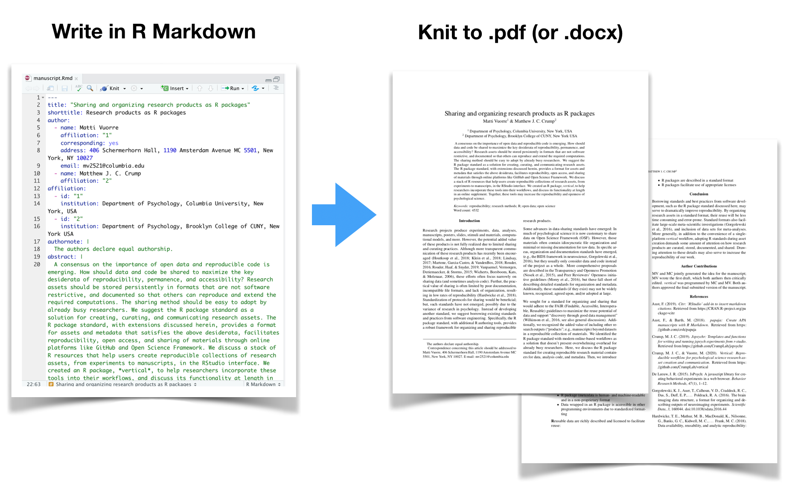
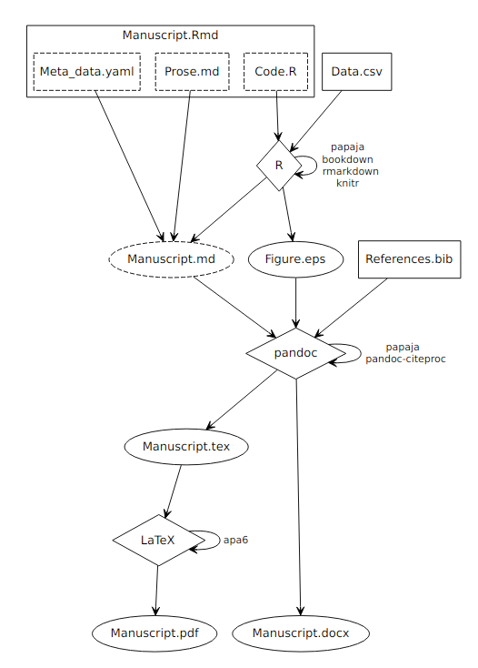

Matthew Crump
10/31/2019
papaja is an R package written by Frederick Aust & Marius Barth.
papaja provides an R Markdown template for writing APA papers that can be compiled to .pdf or word document formats
The documentation for using papaja is here
bookdown packagedevtools installed. papaja is not on CRAN, and we use devtools to install the package from Github.tinytex package which will install the components we need as we need them.papaja

manuscript.Rmd file in the manuscript/ folder.data-raw folder, and including a pre-processing script showing how the data is loaded into R. In this example, I also added the resulting dataframe to the R package for this tutorial, and then loaded the package in the manuscript to load the pre-processed data.Consider using Zotero as a free and very useful citation manager https://www.zotero.org